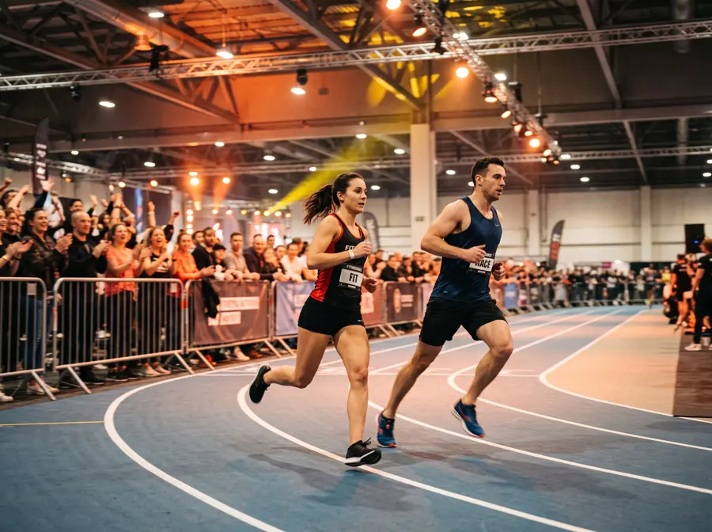

Guía en español · Temporada 2026/27
Todo sobre las competiciones HYROX en España
Calendario de pruebas, qué categoría elegir, cómo es cada estación y cuánto vas a tardar. Explicado claro, para tu primera carrera o para bajar tu marca.
El formato en 30 segundos
Ocho veces lo mismo: corres 1 km y haces una estación. Siempre en el mismo orden, en todas las ciudades. Por eso tu tiempo se puede comparar con el de cualquiera.

¿Qué categoría elijo?
La mayoría empieza en Open. Si vas en pareja, Doubles. Si quieres probar sin hacerlo todo, Relay.
Open
Pesos estándar. La de tu primera competición.
Pro
Más peso. Para quien ya ha competido.
Doubles
En pareja, repartiendo el trabajo.
Relay
Relevos de cuatro personas.
¿Cuánto vas a tardar?
Pon tu ritmo de carrera y tu nivel en las estaciones. Te damos tu tiempo objetivo.
Preguntas frecuentes
¿Qué es una competición HYROX?
Una carrera de fitness que combina 8 km de carrera con 8 estaciones de ejercicio funcional: 1 km de carrera, una estación, y así hasta completar las ocho. El recorrido es igual en todas las ciudades.
¿Cuánto se tarda en completar una prueba?
La mayoría de participantes termina entre una hora y una hora y media. En una primera participación, entre 1h15 y 1h45 es un rango habitual.
¿Necesito clasificarme para participar?
No. Cualquiera puede inscribirse en la categoría que prefiera, sin marcas mínimas ni clasificación previa.
¿Qué categoría elijo para mi primera vez?
Open si vas solo; Doubles si vas en pareja y prefieres repartir el esfuerzo; Relay si queréis hacerlo en equipo de cuatro.
¿Cuándo es la próxima competición en España?
Consulta el calendario de esta web: lo actualizamos cada semana con las fechas y sedes anunciadas en España.
Este dominio está en venta
competicionhyrox.es puede ser tuyo: gimnasio, tienda, organizador o medio deportivo.